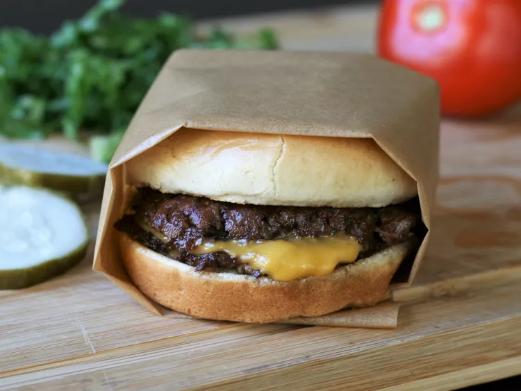

Homemade Smash Burgers
This smash burger recipe makes super juicy burgers with crispy edges. Don't use
meat that is leaner than 80/20 for best results, and make sure the meat is very
cold. I prefer to cook these outdoors to avoid smoking up the kitchen. These grill
up very fast because of the high heat, so make sure you have everything ready
to go!

Ingridiens
- 4 hamburger buns
- 2 tablespoons butter, softened, or as needed
- 1 pound ground chuck beef (80% lean)
- 4 6-inch squares parchment paper
- salt to taste
- 4 slices American cheese
- burger toppings of choice
Directions
- Preheat an outdoor grill for high heat and lightly oil the grate. Set a cast iron flat
- Spread butter on the inside of the buns and toast on the flat-top
- Form meat into 8 loosely-packed balls, 2 ounces each.
- Grill for about 45 seconds, until the edges are dark brown and the centers are a light pink color.